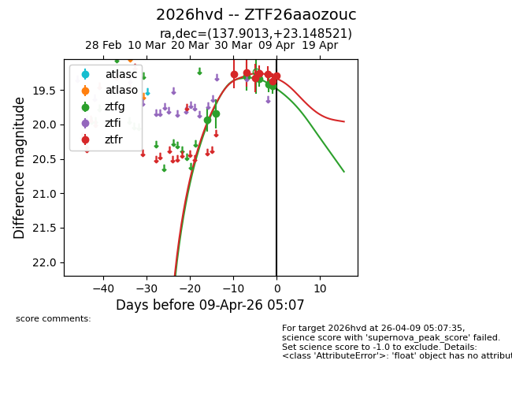
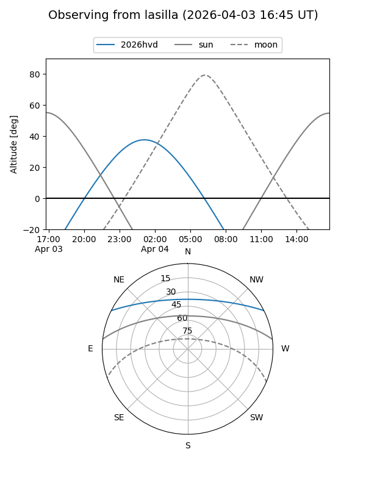
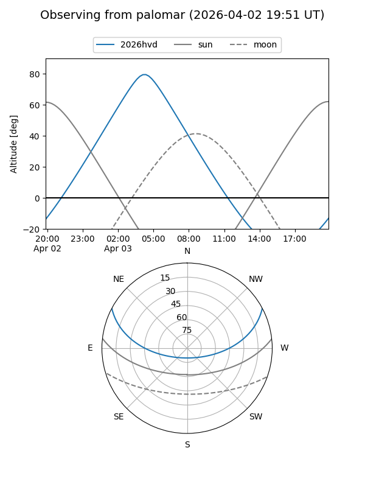
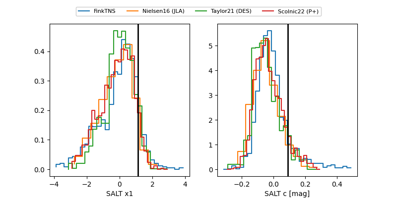

2026hvd
Target 2026hvd at 2026-04-09 05:14
Aliases and brokers:
FINK: link
Lasair: link
ALeRCE: link
TNS: link
YSE: link
alt names
ZTF26aaozouc (ztf,fink_ztf)
2026hvd (tns,yse)
Coordinates:
equatorial (ra, dec) = 137.9013,+23.14852
equatorial (HMS+DMS) = 09:11:36.31,+23:08:54.68
galactic (l, b) = (204.6834,+40.47536)
Flags:
likely cv
Photometry:
last ztfg=19.44, ztfr=19.30
6 ztfg, 7 ztfr detections
Lightcurve

Visibility


Additional plots
